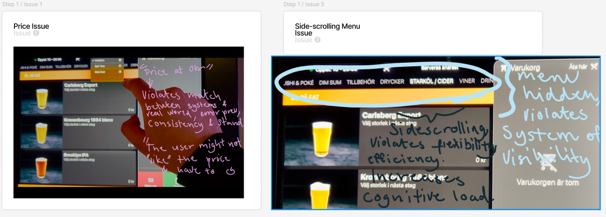
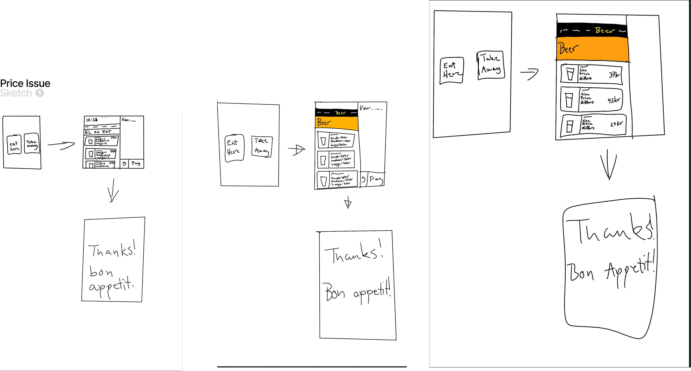
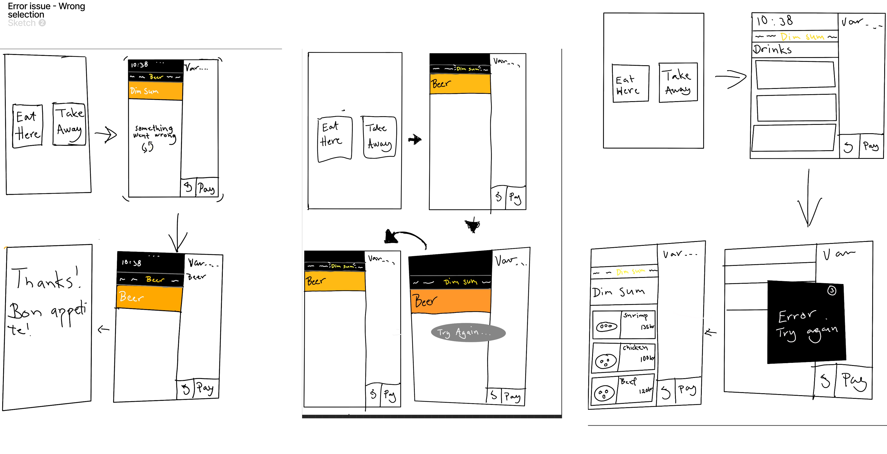
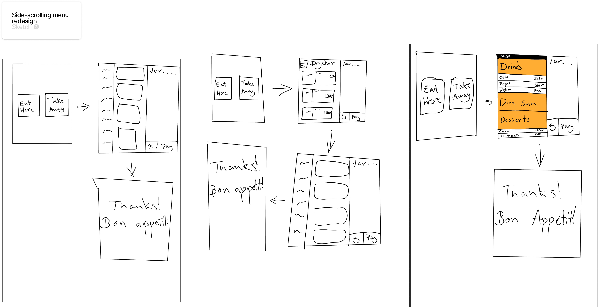
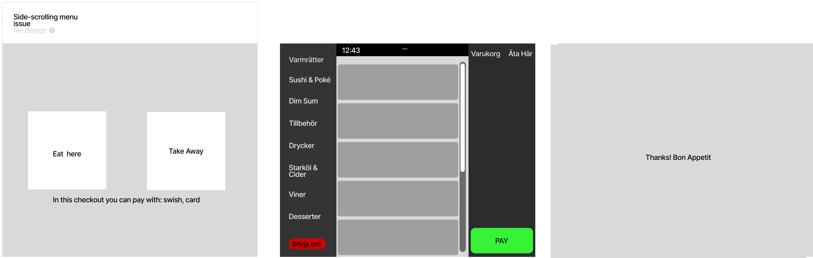
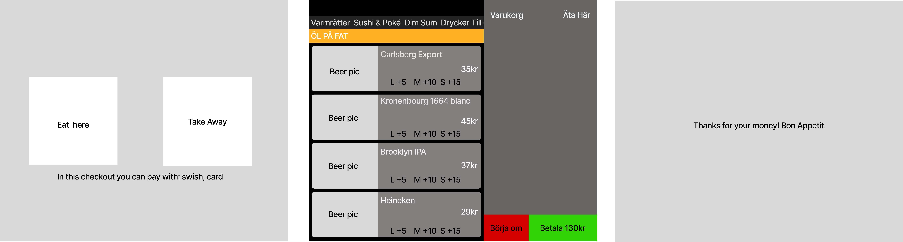
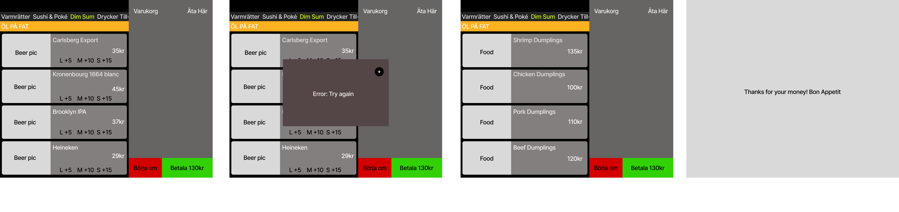

Using usability heuristics to redesign a real self-ordering interface at Pong
This project focused on redesigning a restaurant self-checkout interface I used myself at Pong in Sweden. After experiencing friction in the ordering flow firsthand, I documented the interface through photos and video, identified key usability issues, and redesigned the system using Nielsen's 10 usability heuristics as a guiding framework.
The main goal was not simply to make the interface look better, but to make ordering feel clearer, faster, and more predictable in a real environment where people are standing in line and trying to complete a transaction without confusion.
Design Challenge
Self-ordering systems have to work quickly and clearly. In this context, users are often making decisions under time pressure, sometimes while other people are waiting behind them. That makes even small usability issues feel much more frustrating.
When I used the Pong self-checkout, I noticed that several parts of the ordering flow created unnecessary friction. These issues affected confidence, slowed people down, and made the interface feel less reliable than it should in a transactional setting.
Key Issues Identified

Annotated documentation of the real interface, used to identify where the experience broke down.
1. Pricing looked misleading
One issue was the drink pricing. The interface showed a "0 kr" state before size selection, which could easily make users think the drink was included or free. The actual cost only became clear later, which weakened pricing clarity and predictability.
2. Menu selection felt unreliable
This was the most frustrating issue in practice. Users had to press categories multiple times, and sometimes the wrong category appeared. In a queue-based context, this slows people down and makes the system feel unreliable.
3. Side-scrolling navigation made discovery harder
The horizontal category menu forced users to scroll and search for sections rather than immediately recognizing what was available. This increased effort and made navigation less efficient than it needed to be.
4. Error feedback was too weak
When the system failed to register a choice correctly, users did not receive enough guidance to understand what happened or how to recover. Rather than trying to "fix the backend" in a redesign exercise, I focused on improving feedback and recovery behavior from a UX perspective.
My Approach
I used Nielsen's heuristics as a way to evaluate the interface and explain why these problems were harmful to usability. Instead of treating the issues as isolated annoyances, I connected them to broader principles such as visibility of system status, consistency and standards, error prevention, recognition rather than recall, and user control.
This helped me move from simple critique into design reasoning. Rather than asking "how can I make this prettier?", I focused on questions like: Why is this interaction confusing? What is the user expected to remember? Where does the system fail to communicate clearly? How can the design reduce hesitation and improve trust?
Sketches and Iteration
After identifying the issues, I explored the design space through sketching. I created three sketches for each of the three main issues, nine in total, before deciding which directions to develop further. This was important because it prevented me from jumping straight to one solution too early.

Initial sketches used to explore different ways of improving navigation, pricing clarity, and recovery.

Further concept exploration helped compare multiple approaches rather than settling on the first idea.

Later sketching focused on clearer hierarchy, reduced cognitive load, and stronger visual guidance.
The side-scrolling issue turned out to be the most fruitful in terms of redesign. It opened up broader questions about how users find categories, how much the interface asks them to remember, and how visible the overall menu structure should be from the beginning.
Final Redesign Direction
The redesign aimed to make the ordering experience feel more predictable, easier to scan, and more transparent. The changes were not only visual. They were meant to reduce uncertainty and improve flow in a real public-use setting.
Clearer pricing: Instead of showing a confusing "0 kr" state, the redesign presents size-based pricing directly in the menu so users can understand the cost immediately.
More visible navigation: Categories were made easier to recognize without unnecessary side-scrolling, reducing the effort needed to find the right section.
Better recovery from system issues: Since the interface could misregister choices, I redesigned the feedback so users get a clear message when something goes wrong.
More user control: A timed popup was replaced with a dismissible interaction, allowing users to decide when to close the message instead of being forced to follow the system's timing.
Stronger awareness of menu position: I added a scrollbar and clearer progress cues so users can better understand where they are in the menu structure.

Progress feedback helps users understand where they are in the menu and reduces the need to guess.

Redesign improvements for clearer pricing and better category visibility.

Redesign regarding Error Handling and User Recovery.
My Role
This was an individual usability redesign project. I used the self-checkout myself, documented the interface through real photos and video, identified and annotated the issues, applied theory to explain why the problems damaged usability, and then produced the sketches, redesign concepts, and wireframes myself.
Reflection
This was one of my first major GUI projects, and it taught me how to use heuristic theory as a practical design tool rather than just as something to reference academically. It helped me understand how small interface details can have a large effect on trust, speed, and confidence when users are completing a real task.
I also learned that usability work is not just about finding faults. It is about translating friction into design decisions that reduce confusion and make the system easier to understand in context. In this case, that meant thinking about queues, pressure, visibility, and user recovery rather than only visual polish.
This project strengthened my ability to analyse a real interface in the wild, connect problems to theory, and turn those observations into concrete redesign decisions.